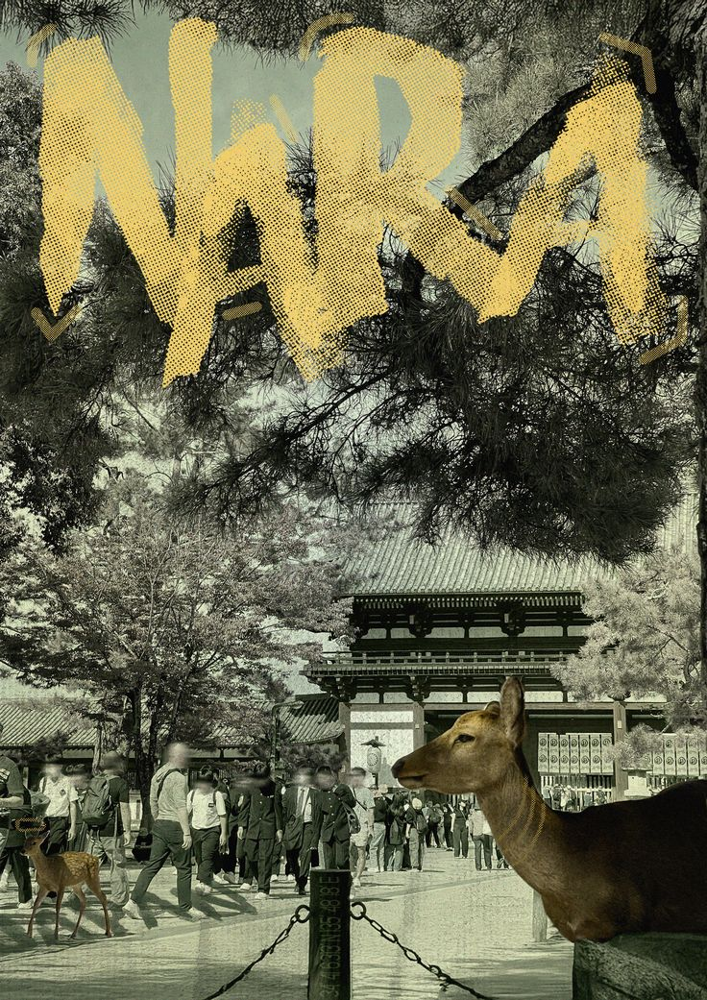
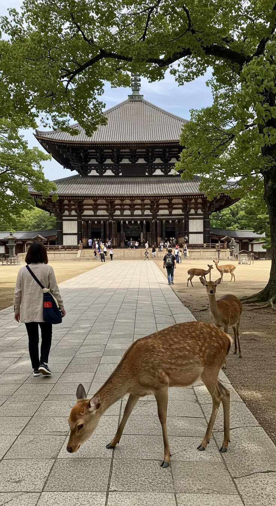

Japão para Visitantes
Um guia introdutório para te guiar em uma jornada de descobertas pelo Japão.
Um guia introdutório para te guiar em uma jornada de descobertas pelo Japão.

Nara, localizada na região de Kansai, foi a primeira capital permanente do Japão, desempenhando um papel fundamental na formação cultural, política e religiosa do país. Por esse motivo, a cidade é amplamente reconhecida como um dos berços da civilização japonesa, preservando tradições e estruturas que remontam aos primórdios da história nacional. Diferente de grandes centros urbanos, Nara apresenta um ambiente mais calmo, organizado e voltado à preservação histórica. A cidade possui menor densidade populacional e um ritmo mais tranquilo, o que contribui para uma experiência mais contemplativa. A convivência entre áreas urbanas e espaços naturais é um dos aspectos mais marcantes, criando um equilíbrio entre desenvolvimento e conservação. O sistema de transporte é funcional e integrado com outras cidades da região, como Kyoto e Osaka, permitindo acesso relativamente fácil. Dentro da cidade, muitas áreas podem ser exploradas a pé, especialmente devido à proximidade entre regiões históricas e culturais. Culturalmente, Nara possui forte influência do budismo e de práticas religiosas tradicionais. A cidade abriga algumas das instituições mais antigas do Japão, refletindo valores espirituais e históricos profundamente enraizados. Esse legado é percebido não apenas em estruturas religiosas, mas também no comportamento e na organização da sociedade local. A etiqueta social segue padrões japoneses tradicionais, com ênfase em respeito, silêncio e preservação dos espaços públicos. Como a cidade recebe muitos visitantes, há também uma preocupação constante com a conservação do patrimônio histórico e ambiental. O clima em Nara segue o padrão das quatro estações, com verões quentes e úmidos e invernos relativamente frios. Primavera e outono são períodos particularmente agradáveis, tanto pelas temperaturas quanto pelas mudanças naturais na paisagem. A culinária local reflete a simplicidade e tradição da região, com pratos que valorizam ingredientes naturais e preparo cuidadoso. Embora não seja tão conhecida quanto outras cidades gastronômicas, Nara oferece uma experiência mais autêntica e tradicional nesse aspecto. Um dos elementos mais característicos da cidade é a presença de cervos que circulam livremente em diversas áreas. Esses animais são considerados símbolos locais e possuem importância cultural, sendo tratados com respeito tanto por moradores quanto por visitantes. O custo de vida e turismo em Nara tende a ser moderado, com opções acessíveis em comparação a grandes centros urbanos. Isso, aliado ao ambiente tranquilo, torna a cidade uma escolha interessante para quem busca uma experiência mais histórica e menos agitada no Japão. De forma geral, Nara representa uma das faces mais antigas e preservadas do Japão. A cidade oferece uma imersão profunda na origem cultural do país, destacando-se pela tranquilidade, pela espiritualidade e pela forte conexão entre história e natureza.

Nara reúne alguns dos pontos turísticos mais antigos e culturalmente relevantes do Japão, com forte presença de patrimônios históricos, áreas naturais e locais de importância religiosa. Entre os destaques está o Parque de Nara, uma extensa área verde onde circulam livremente centenas de cervos considerados sagrados. O local funciona como um dos principais centros turísticos da cidade, reunindo natureza e tradição em um mesmo espaço. Dentro dessa área encontra-se o Templo Todai-ji, um dos templos budistas mais importantes do país, conhecido por abrigar uma das maiores estátuas de Buda de bronze do mundo. Sua estrutura em madeira também está entre as maiores já construídas. Outro local relevante é o Santuário Kasuga Taisha, famoso por suas inúmeras lanternas de pedra e bronze, além de sua forte ligação com a espiritualidade local. A área ao redor é cercada por natureza, reforçando o ambiente contemplativo. O Templo Kofuku-ji é outro marco histórico, conhecido por sua pagoda de cinco andares, uma das mais altas do Japão. O complexo possui grande importância histórica e cultural para a cidade. Para uma experiência mais tranquila, o Jardim Isuien oferece um espaço cuidadosamente planejado, com paisagens que combinam elementos naturais e arquitetura tradicional japonesa. Outro ponto de interesse é o Monte Wakakusa, que proporciona uma vista panorâmica da cidade e é palco de eventos tradicionais ao longo do ano. O Museu Nacional de Nara abriga uma coleção significativa de arte budista e artefatos históricos, sendo uma referência importante para quem deseja aprofundar o conhecimento sobre a cultura local. Além disso, a região de Naramachi preserva antigas residências e ruas tradicionais, oferecendo uma visão mais próxima do cotidiano histórico da cidade. A variedade de pontos turísticos em Nara destaca sua importância como centro histórico e espiritual. A cidade proporciona uma experiência focada na contemplação, na preservação cultural e na interação harmoniosa entre natureza e patrimônio histórico.